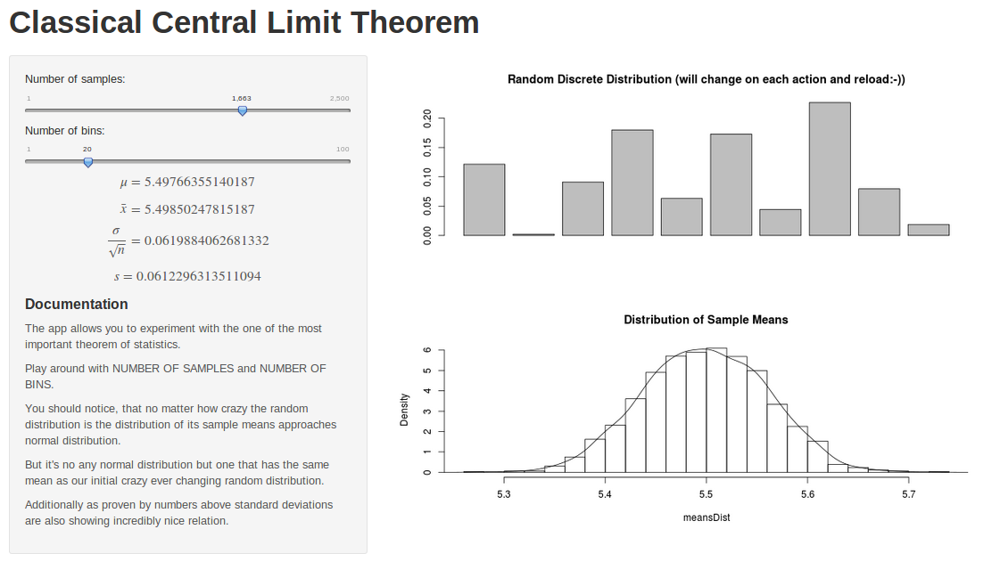

- Start from any no matter how crazy distribution
- Sample it many time and at each step calculate mean of your sample
- If you plot the distribution of those means you should see nice well known shape resembling normal distribution bell's curve
- The parameters of this curve are govern by paramters of the original crazy distribution and number of samples
Classical Central Limit Theorem App
Math is incredible!
William Wallace
Central Limit Theorem
So what should you see?
Random Distribution:

Distribution of sample means drawn from the Random Distribution:

Means will be almost identical \(\bar{x} = \mu\)
And the following relationship will connect standard deviations: $\frac{\sigma}{\sqrt{n}} \rightarrow s $
Experiment and feel the theorem
Experience CLT by playing with my app:
Play around with the number of samples that will be produced out of our ever changing random distribution
Feel! how means are following each other
Observe! how nicely relationship between standard deviations emerges
What's next
- Central Limit Theorem and Normal Distributions are strong foundation of not only statistics but our modern world!
- The "averaging" behaviour of random distributions shows how incredibly well structured our world is.
- Explore more to discover even more amazing examples of such an "averaging"